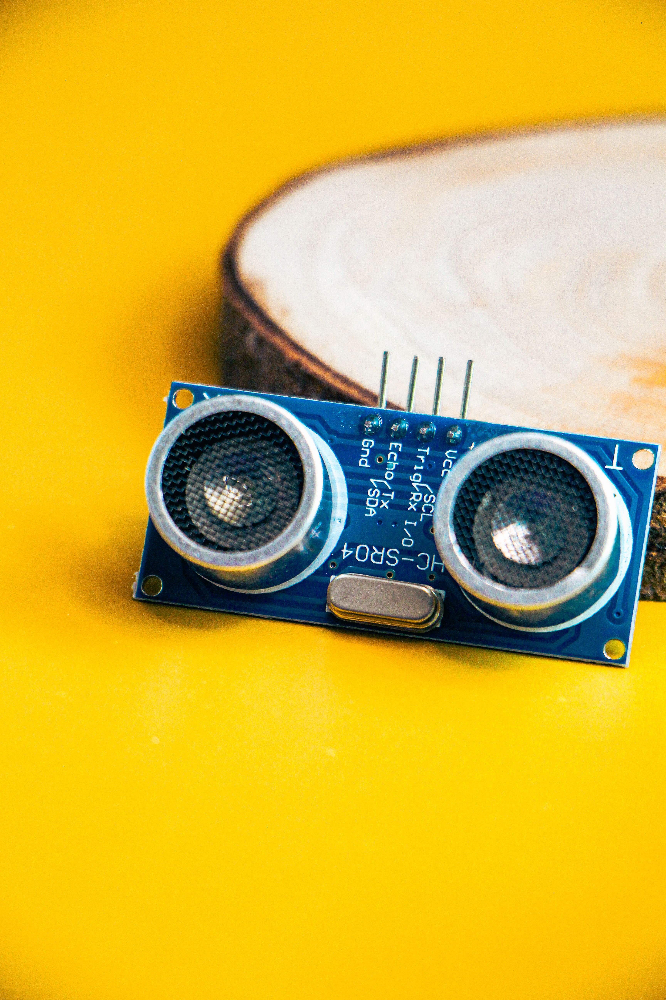

01 • IRRIGATION
Soil Moisture Monitoring
Soil moisture sensors monitor the amount of moisture available in the soil. The information can support automatic irrigation according to crop requirements.
- Soil moisture measurement
- Irrigation monitoring
- Water conservation